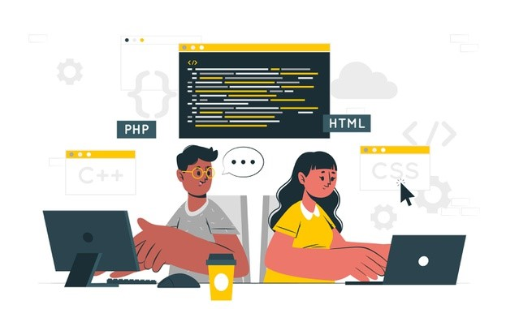
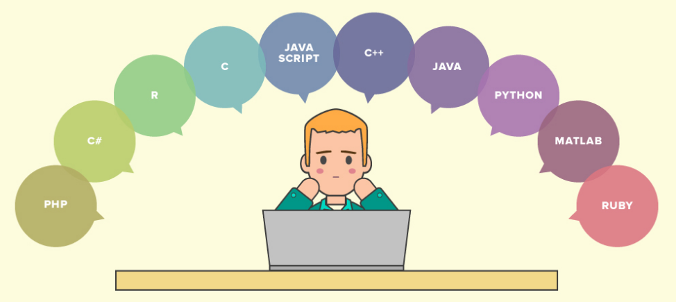

What is coding?
Coding adalah salah satu tindakan dari langkah-langkah
pemrograman dengan menuliskan kode atau skrip dalam bahasa
pemrograman. Supaya skrip tersebut dapat dipahami oleh
komputer, maka saat proses coding kamu harus mengikuti aturan
sintaks yang berlaku. Aturan sintaks sangat tergantung dari bahasa
pemrograman apa yang kamu gunakan saat menuliskan skrip.
Types of programmers

Dunia pemrograman merupakan dunia yang sangat unik, asyik,
menarik dan kadang ditemukan hal yang aneh pula. Begitu juga
karakter programmer, masing-masing punya tipenya sendiri dalam
menyelesaikan project coding. Ada beberapa tipe programmer
programmer masa kini yang perlu kamu ketahui, yaitu :
- The Hero
- The Ninja
- The Experimenter
- The Creator
- The Theoretician
- The Magician
Choosing a computer language

Jika Kamu baru mengenal dunia pemrograman, ada berbagai
kemungkinan yang membingungkan. Bahasa pemrograman
mana yang terbaik untuk memulai belajar pemrograman adalah
pertanyaan yang akan mendapatkan banyak jawaban berbeda dan
membingungkan.